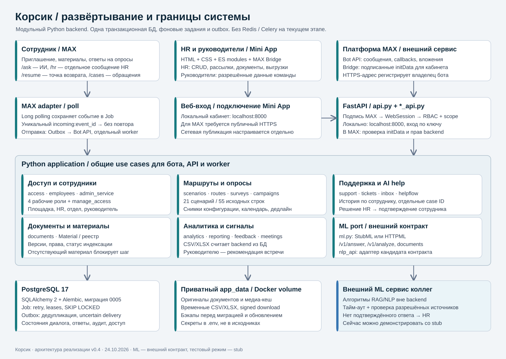

<!doctype html><meta charset="utf-8"><title>Корсик · техническая архитектура</title><style>body{margin:0;background:#0e1a28;color:white;font:16px system-ui}header{position:sticky;top:0;background:#13283c;padding:16px;display:flex;gap:12px;align-items:center}button,a{padding:10px 18px;border:0;border-radius:8px;background:#d8f3f0;color:#0c3c42;cursor:pointer;text-decoration:none}main{overflow:auto;height:calc(100vh - 76px)}img{display:block;width:100%;max-width:none}</style><header><strong>Корсик · архитектура</strong><button onclick="show(0)">Развёртывание</button><button onclick="show(1)">Потоки и состояния</button><button onclick="show(2)">Данные и права</button><button onclick="zoom(1.2)">+</button><button onclick="zoom(1/1.2)">−</button><a href="architecture.pdf">PDF</a></header><main></main><script>let scale=100;const names=['01-runtime','02-flows','03-data-access'];function show(i){diagram.src=names[i]+'.svg';scale=100;diagram.style.width='100%'}function zoom(k){scale=Math.min(300,Math.max(50,scale*k));diagram.style.width=scale+'%'}</script>